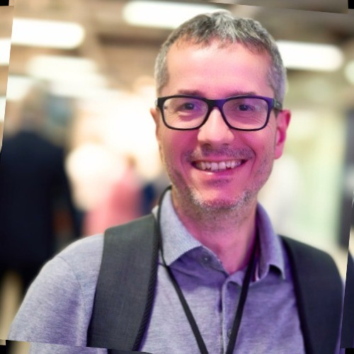

Windlead is Claudio Zera's independent practice. Twenty years of architecture and delivery, brought to teams that need a senior hand on hard problems - market integration, applied AI, and the engineering discipline that holds it all together.
Most engagements sit cleanly in one of these areas - and the interesting ones sit at the seams between them.
For carriers, brokers, MGAs and vendors entering or modernising in the London Market. I help teams turn market requirements into systems that hold up under audit, scale, and the next standards refresh.
LLM and agent-based systems built to live in real products - with the evals, guardrails, cost discipline and humility about model limits that distinguishes a working tool from a demo.
A senior pair of hands for the work that doesn't fit a template: API and data design, distributed systems, knowledge transfer, and shepherding teams through the bits where engineering culture gets tested.
Intensive, cohort-based workshops for IT and software teams entering or building for the London Market - two- and three-day sessions that distil twenty years inside the market's systems, standards and habits into something teams can act on the week after.
Explore LM Workshops →
Claudio brings 20+ years in software architecture and London Market integration. He has guided dozens of teams through successful market entry, and understands both the technical depth and the market psychology that decide whether an implementation lands.
He has worked across the full stack - from API design and data transformation to distributed systems, compliance frameworks and team scaling - with a proven track record of translating tangled market requirements into production-ready software.
More recently, that practice has extended into applied AI: bringing the same engineering discipline to LLM- and agent-based applications, where the difference between a demo and a dependable product comes down to evaluations, guardrails and operational craft.
Short engagements, advisory retainers, and longer hands-on work - all welcome. The best first step is a 30-minute conversation about what you're trying to land.